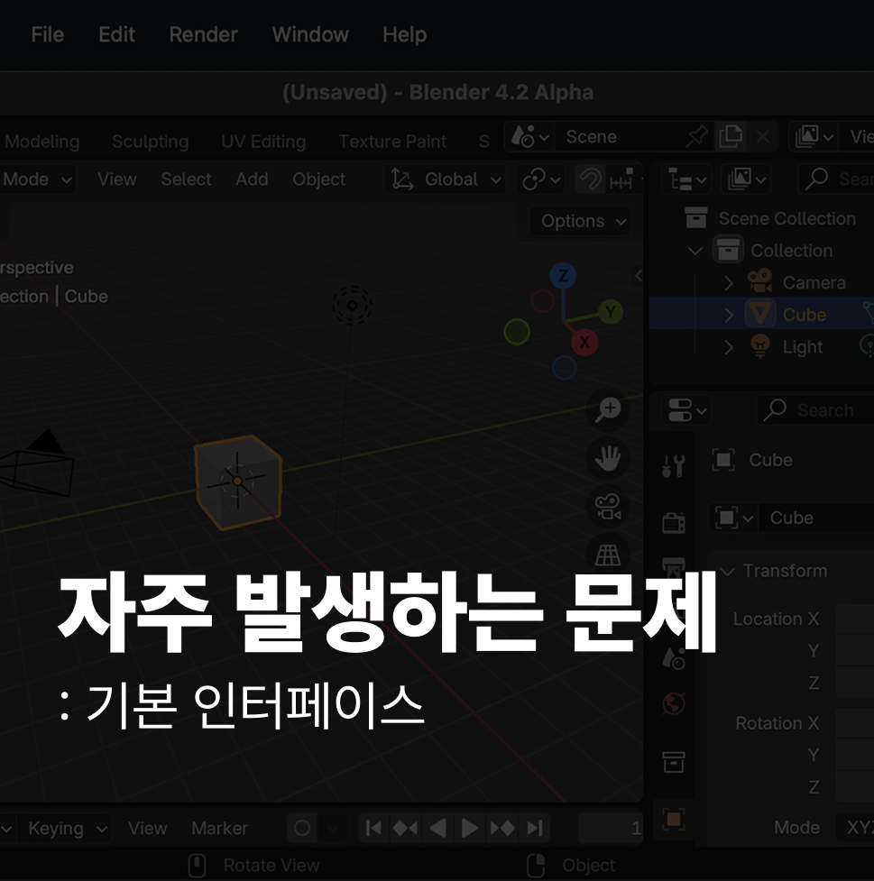

1 3D 뷰포트 내비게이션 혼란
마우스 중간 버튼(휠)을 눌러 화면을 회전하거나, Shift와 중간 버튼을 함께 눌러 화면을 이동(팬)하는 등의 기본적인 조작에 숙련되지 않아 시점 이동에 어려움을 겪는 경우가 많습니다.
2 오브젝트 선택 실수
기본 선택 버튼이 왼쪽 클릭(최신 기본 설정)인지 오른쪽 클릭(구 버전 또는 커스텀 설정)인지 혼동하여 원하는 오브젝트를 선택하는 데 애를 먹거나, 복잡한 장면에서 선택에 오류가 발생하는 상황입니다.
3 오브젝트가 사라지거나 보이지 않음
사용자가 의도치 않게 레이어(컬렉션)의 가시성을 끄거나, 뷰포트 기즈모(Gizmo)를 비활성화하거나, 씬의 작업 공간(World Space) 바깥으로 오브젝트를 이동시켜서 오브젝트를 잃어버리는 경우가 발생합니다.
4 피벗 포인트 및 3D 커서 오용
오브젝트 회전 및 크기 조절의 기준점(피벗 포인트)을 '3D 커서'로 설정한 상태에서 실수로 커서를 부적절한 위치에 두어 오브젝트가 예상과 전혀 다르게 변형되는 오류입니다.
피벗 포인트 및 3D 커서 오용
오브젝트 회전 및 크기 조절의 기준점(피벗 포인트)을 '3D 커서'로 설정한 상태에서 실수로 커서를 부적절한 위치에 두어 오브젝트가 예상과 전혀 다르게 변형되는 오류입니다.